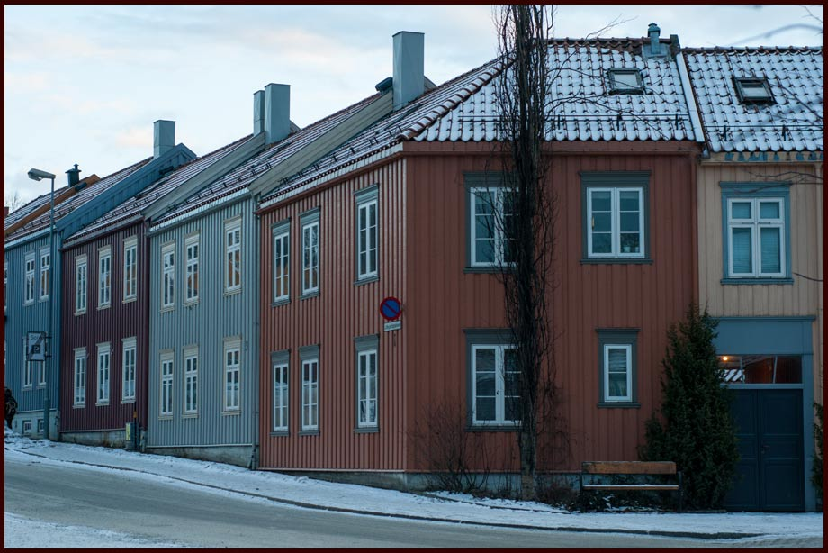
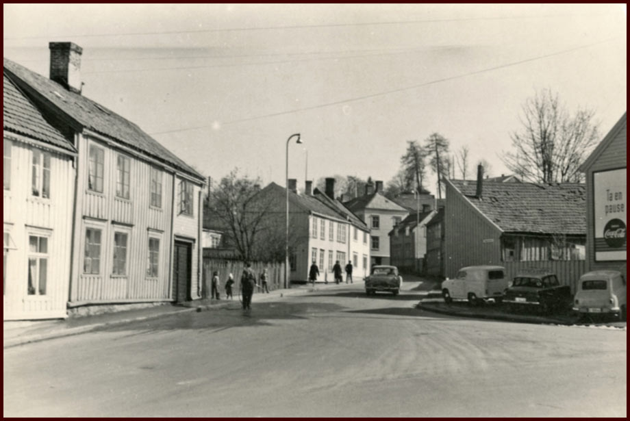
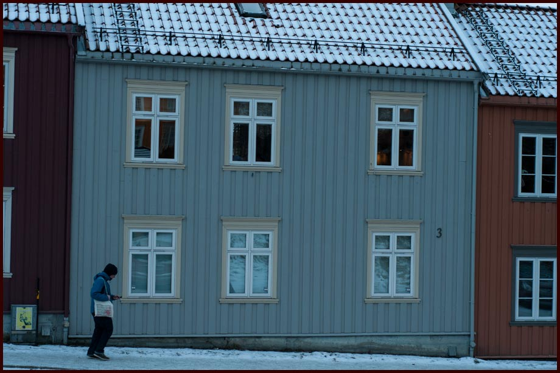
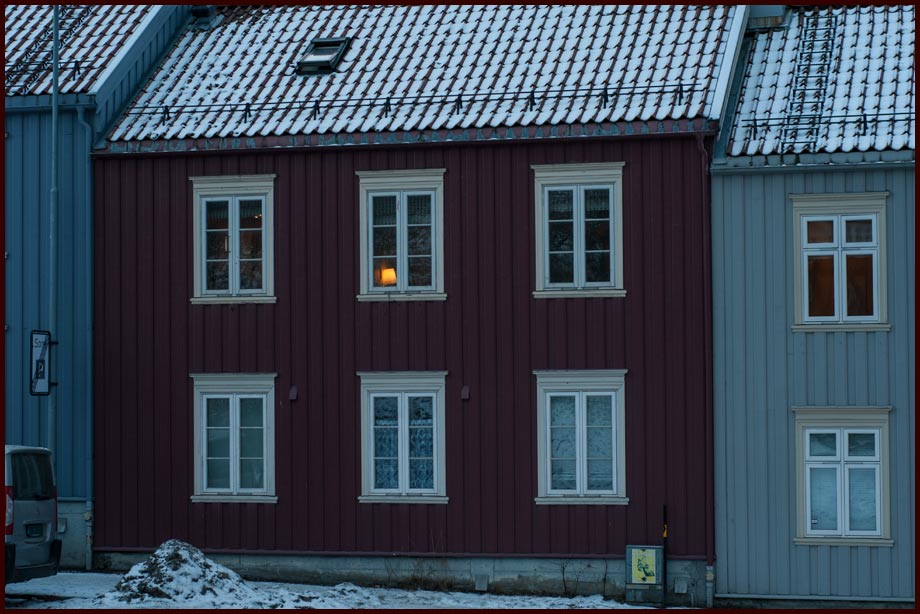
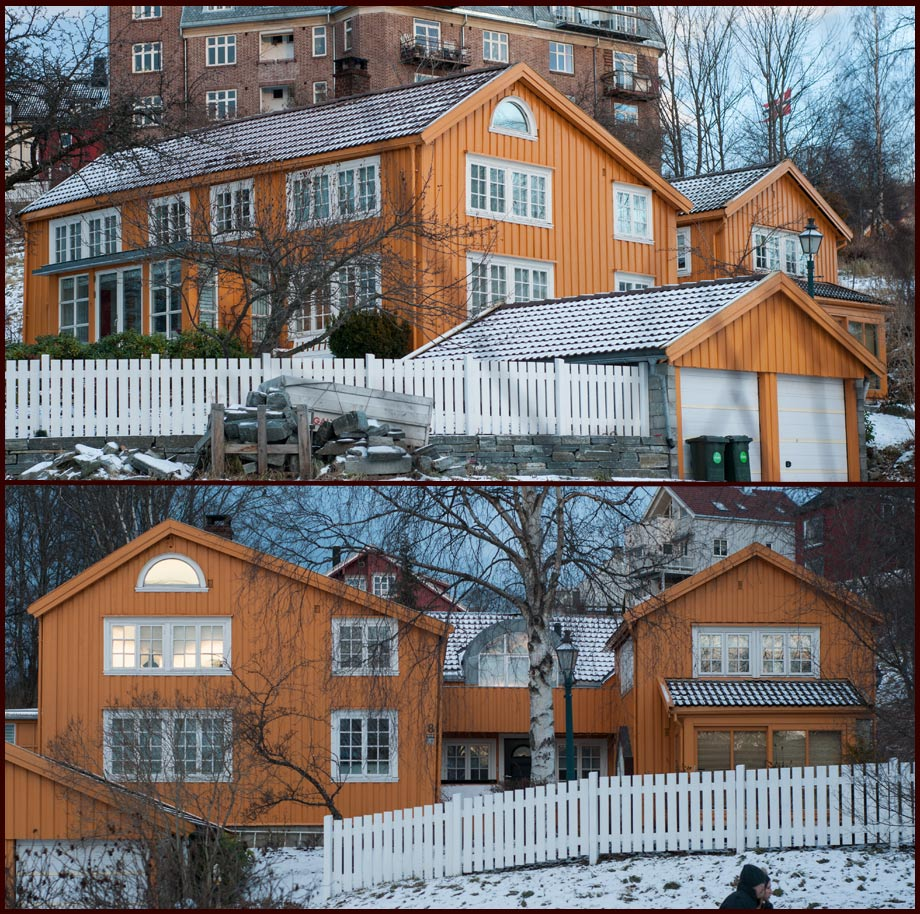
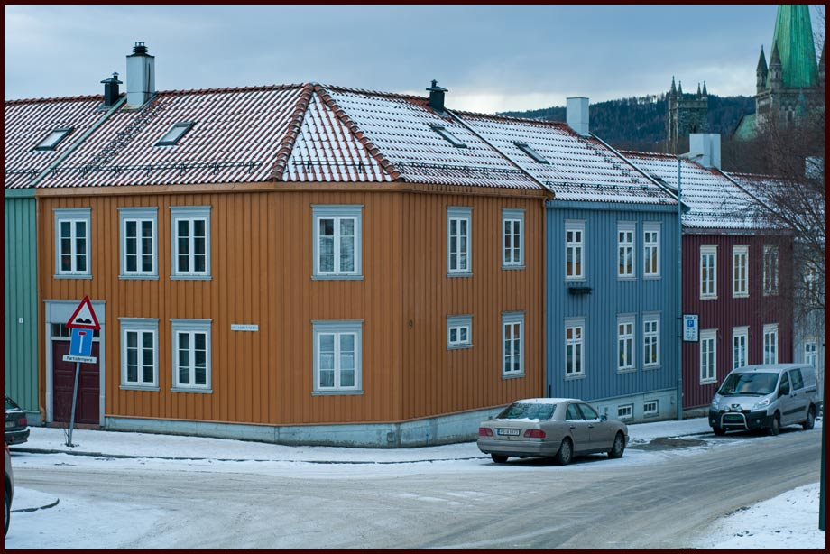

Lillegårdsbakken
Lillegårdsbakken fikk navnet sitt i 1914, oppkalt etter Lillegården. Lillegården het tildligere Duegården og opprinnelig Bakklandet Lille. Gården hadde gnr. 61 i Strinda. Lillegårdsbakken strekker seg fra Øvre Bakklandet forbi Duedalen, opp til Jonsvannsveien (Kilde: Trondheim Byleksikon) På denne nettsiden regnes Lillegårdsbakken 1-11 som den delen som tilhører Bakklandet. Underlag vedrørende andre dokumenterbare bydelsgrenser sendes hit: E-post redaksjon@bakklandet.info

Lillegårdsbakken tar av fra Øvre Bakklandet
( Fotograf: Schrøder - 1949 gjengitt med tillatelse fra Sverresborg Trøndelag Folkemuseum, Inventarnr.:FTTF.SCH.K.013181)
Lillegårdsbakken 1

Lillegårdsbakken 1
Lillegårdsbakken 2, 4, 6, 10, 12

Lillegårdsbakken 2, 4, 6, 10 og 12 er i dag ubebygde tomter.
Lillegårdsbakken 2, 4, 6, 10 og 12 er i dag ubebygde tomter. Bilvei samt gang- og sykkelvei tar nå mye av plassen. Karttegningen er ikke eksakt, kun en tenkt tidligere bebyggelse. Gateløpet var mye trangere tidligere.

Lillegårdsbakken sett fra krysset med Øvre Bakklandet. Tidspunktet er ut fra bilmodellene å dømme, tidlig på sekstitallet (1960-61). Alle husene vi ser på venstre side, er revet. Fotograf: - ukjent. År: - ukjent. Bildet er gjengitt med tillatelse fra Trondheim byarkiv. Arikref: Tor.Hxx.Bxx.F5135 (Byantikvaren)
Lillegårdsbakken 3

Lillegårdsbakken 3 (Foto: EspeN-ikon ©;)
Lillegårdsbakken 5

Lillegårdsbakken 5 (Foto: EspeN-ikon ©;)
Lillegårdsbakken 7

Lillegårdsbakken 7 (Foto: EspeN-ikon ©;)
Lillegårdsbakken 8

Lillegårdsbakken 8 er en av de eldste husene på Bakklandet. Tomta var bebygd med kjernen av nåværende hus i 1771 (Når det ble bygd er ukjent). I 1770-åra bodde det her en smed og brannmann. Senere har det vært vognmann her, slakteri, snekkerverksted og framfor alt bolig. Omfattende restaurering gjennomført 1980-95 av Synnøve og Sverre H. Utseth. Innsendt av Sverre H. Utseth (Kilde Trondheim Folkebibliotek /meyer) (Foto: EspeN-ikon ©;)
Lillegårdsbakken 9

Lillegårdsbakken 9 (Foto: EspeN-ikon ©;)